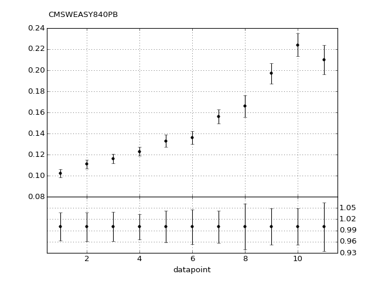
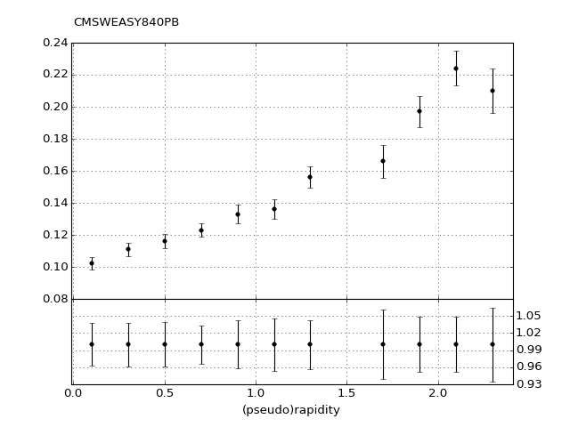

<h1>CMSWEASY840PB</h1>

<h4>Plot vs Datapoint</h4>

<p><a href="CMSWEASY840PB.pdf"></a> </p>

<p><a href="../index.html">Return to Index</a></p>

<hr />

<h4>Plot vs Kinematics (collated bins)</h4>

<h6>n.b bins are scaled by a factor of 2^i where i is the bin index</h6>

<p><a href="../index.html">Return to Index</a></p>

<hr />

<h4>Ratio plot vs Kinematics (collated bins)</h4>

<p><a href="../index.html">Return to Index</a></p>

<hr />

<h4>Plot vs Kinematics (individual bins)</h4>

<p><a href="CMSWEASY840PB_0_0.pdf">0</em>0" title="" /></a></p>

<p><a href="../index.html">Return to Index</a></p>

<hr />
<head>
<link rel="stylesheet" type="text/css" href="../github.css">
</head>
